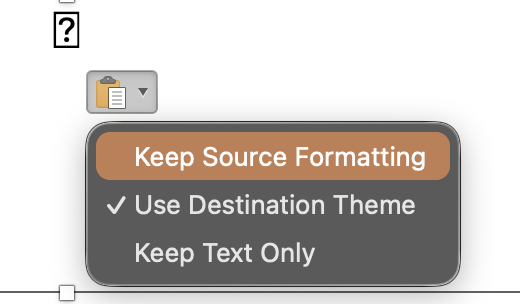

SlideMarks symbols
No symbols match your search.
Seeing boxes after pasting into PowerPoint?
PowerPoint swapped the SlideMarks font for the theme font. Fix it like this:
- Paste as usual (⌘+V or Ctrl+V).
- Click the Paste Options button that appears next to it.
- Choose Keep Source Formatting.

PowerPoint's default, Use Destination Theme, is what swaps the font. Word may need the same choice. Still boxes? Install the SlideMarks font, then restart Office.